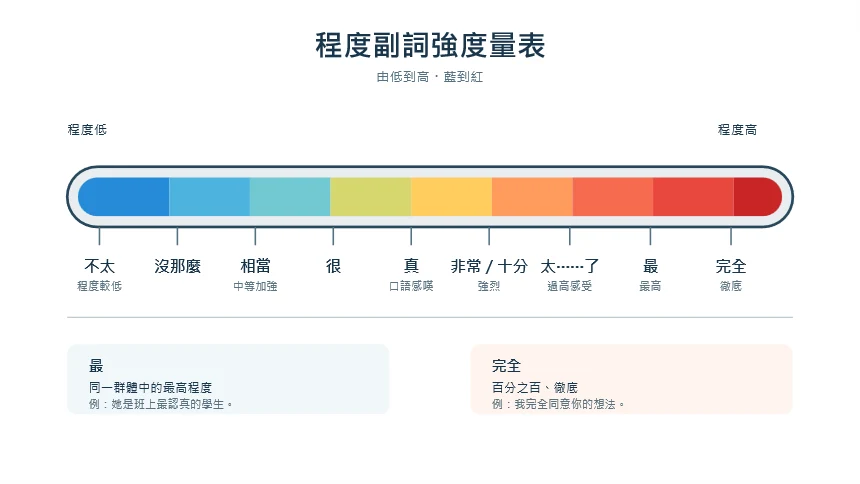

緩和與否定
不太・沒那麼
我最近不太累。
現在沒有那麼焦慮。
01 / 語法觀察
同一種感受，換一個副詞，程度或語氣就不一樣。點選詞語，觀察例句。
不太・沒那麼
我最近不太累。
現在沒有那麼焦慮。
很・真・蠻・相當
這裡很安靜。
今天相當忙。
非常・十分
客人非常多。
我十分緊張。
「很、真、蠻、相當」不必排成固定的強弱順序；語境和說話語氣也會影響意思。
我太累了！
這個蛋糕太好吃了！
這是我最喜歡的臺灣小吃。
她是班上最認真的學生。
我完全同意你的想法。
這兩件事完全不一樣。
他完全忘了這件事。

此圖作為教材參考；「最」強調比較範圍，「完全」強調完整程度，不能單純當作同一條強度尺。
02 / 閱讀
讀一讀梅玲的故事，找出她的生活與心情如何改變。
梅玲來臺灣念書已經一年了。她的中文進步得很快，平常上課、買東西、跟同學聊天都沒有太大的問題。這學期她搬到一間離學校比較遠的房子，也開始在一家咖啡店打工。新的生活節奏跟以前完全不一樣，所以她的第一個月過得相當忙碌。
每天早上六點半，梅玲就得起床。以前她很喜歡慢慢吃早餐，再走路去學校；現在她常常只喝一杯豆漿，就急急忙忙地去搭公車。早上交通尖峰時間公車上的人非常多，有時候她站了四十分鐘，腳真的很酸。她曾經覺得這樣的生活太辛苦了，甚至想搬回學校附近。
不過，梅玲也發現新住處有不少優點。她的房間雖然不大，卻十分安靜，假日可以很專心地看書。附近有一個市場，蔬菜和水果比學校附近便宜很多。星期六早上，她最喜歡到市場買水果，再跟老闆聊幾句。因為老闆也是越南人，對她特別親切，常常給她打折的價錢。
咖啡店的工作一開始也讓她很緊張。店長說話很快，客人點餐時又會提出各種要求，例如「少冰」、「牛奶換成燕麥奶」或「咖啡要非常燙」。梅玲剛開始常常聽不清楚，心裡相當著急。有一次，她把一位客人的飲料做錯了，雖然客人沒有生氣，她還是覺得很不好意思。
漸漸地，梅玲能聽懂大部分客人的需求，也可以比較自然地回答問題。她發現自己不需要每一句都說得完全正確，只要態度好、再次確認，客人通常都很有耐心。店長也說她進步得非常明顯，建議她試著負責收銀臺。這個工作比做飲料更複雜，卻讓她工作經驗更豐富。
有一次梅玲約幾位同學來家裡吃飯。大家問她搬家以後習不習慣，她笑著說：「剛開始真的不太習慣，現在好多了。我還是很累，可是沒有那麼焦慮了。」她認為適應新生活不一定要立刻做到最好；重要的是每天多學一點。她的日子依然很忙，但她已經不再覺得自己只是勉強撐著，而是慢慢變成這裡的人了。
03 / 選詞練習
依照每題的語境或指定語氣選出答案，再查看解說。
04 / 看圖說話
每張圖片寫三句話，每句都使用一個程度副詞。可以描述人物、環境或推測人物的感受。
05 / 寫作
描述你開始一份新工作、搬家、學習新技能，或進入新班級後的第一個月。
字數以不含標點與空白的字元計算；副詞偵測只協助自查，是否用得自然仍需由老師確認。
作答只保留在目前頁面，重新整理或關閉後不會保留。完成後請先複製你的文字。